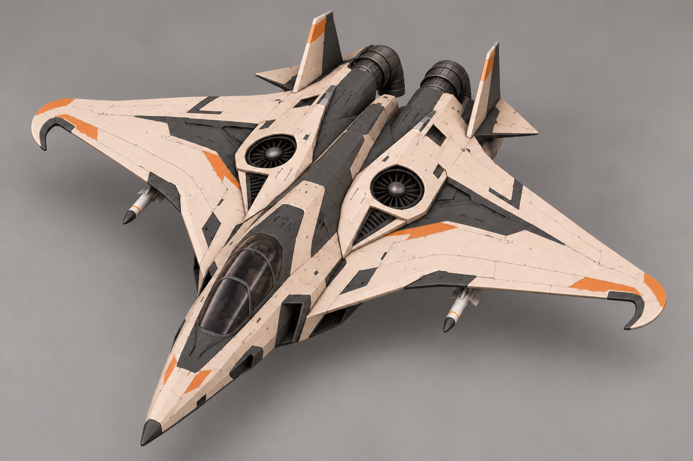
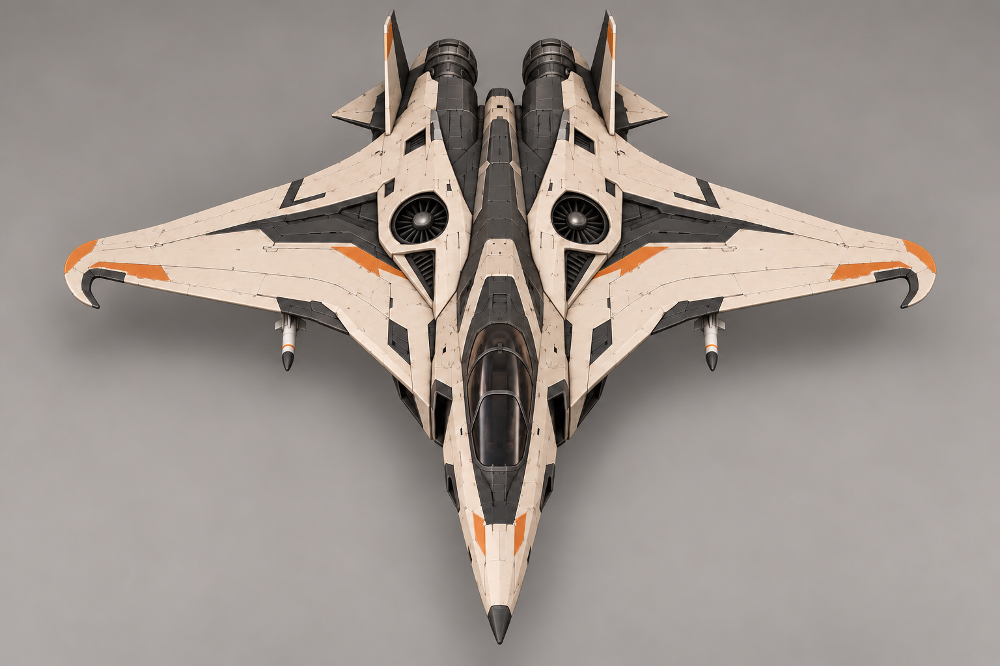
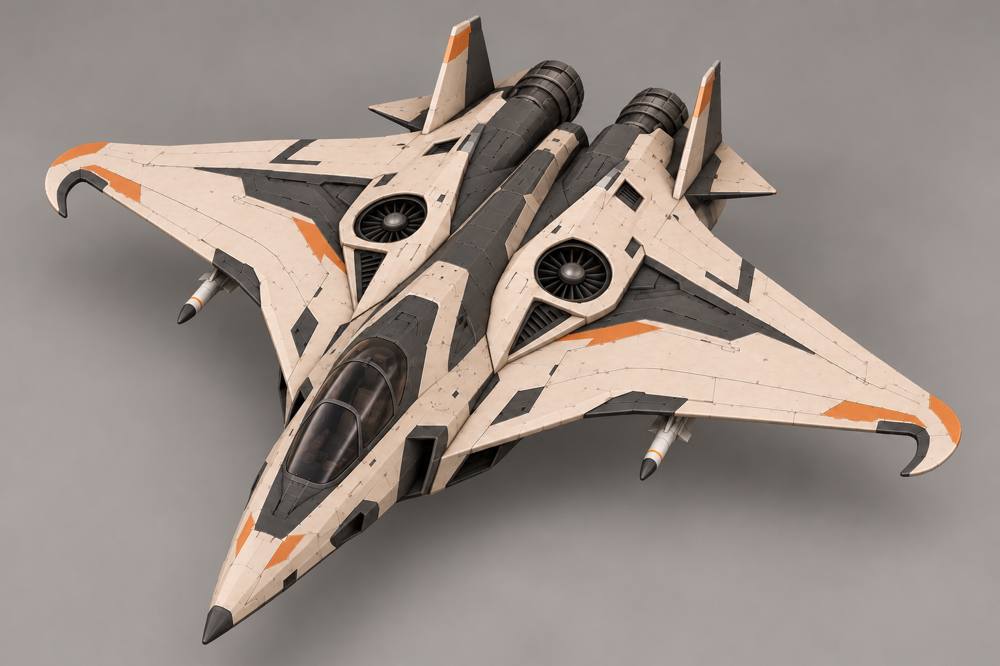

Основной вид · сопла вниз

Текущая доработка · одна турбина и одно сопло
Взято направление D «Серп». По запросу автора: одинаковые зеркальные серповидные законцовки к кабине, поворачиваемые вниз задние сопла, подъёмные турбины в средней части корпуса. Пара встроенных турбин и два поворотных сопла — реализация запроса в концепте. Две ракеты на подкрыльевых пилонах предложены для обсуждения, оружие не утверждено. Число видимых ракет не задаёт боезапас или размер залпа. Подвесы не вводят наземную атаку. Статические изображения не подтверждают физику зависания, кинематику или готовую анимацию.
Паспорт · Промпты · Исходные A–H


